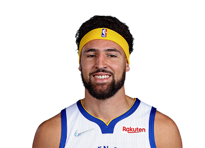
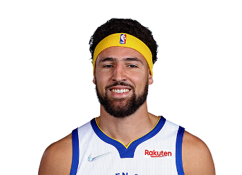
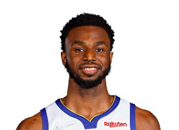
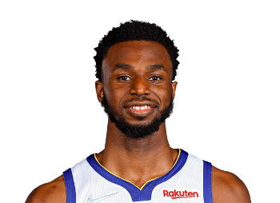
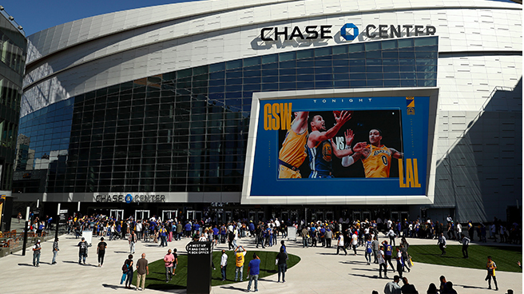

Golden State Warriors
Golden State Warriors é uma equipe de basquete profissional americana sediada em São Francisco. O Warriors compete na National Basketball Association (NBA), como membro da conferência oeste, divisão do pacifico da liga.
Fundada em 1946 em Filadélfia, o Golden State Warriors mudou-se para a área da Baía de São Francisco em 1962 e levou o nome da cidade, antes de mudar seu apelido geográfica para Golden State em 1971.
Eles jogam seus jogos em casa no Chase Center.O elenco fortíssimo é o atual campeão da NBA.
O time do golden state possui 5 títulos da NBA, os atletas mais antigos que ainda estão no elenco são:Draymond Green, Stephen Curry e Klay Thompson sendo cada um com 4 títulos da NBA
Elenco Titular - Golden State Warriors
 
  
 
CHASE CENTER
 
Sobre o Chase Center
Chase Center é uma arena multi-uso localizada em São Francisco, Califórnia. Serve como local de mando de jogo do time Golden State Warriors, da National Basketball Association (NBA).
Os Warriors, que estão localizados na área da baía de São Francisco desde 1962, jogaram seus jogos em casa na Oracle Arena em Oakland, de 1971 até 2019.O Chase Center foi inaugurado em 6 de setembro de 2019.
O primeiro jogo de pré-temporada no Chase Center ocorreu em 5 de outubro de 2019, quando o Warriors perdeu para o Los Angeles Lakers, por 123-101.
Abertura
A arena teve sua inauguração realizada no dia 6 de setembro de 2019, com um show do Metallica e a Orquestra Sinfônica de São Francisco.[1]
A equipe jogou seu primeiro jogo da temporada regular em 24 de outubro de 2019, quando foram derrotados pelo Los Angeles Clippers por um placar de 141 a 122.
Maiores jogadores da história do Golden State Warriors
1-Stephen Curry
2-Wilt Chamberlain
3-Rick Barry
4-Paul Arizin
5-Kevin Durant
6-Chris Mullin
7-Neil Johnston
8-Nate Thurmond
9-Klay Thompson
10-Draymond Green